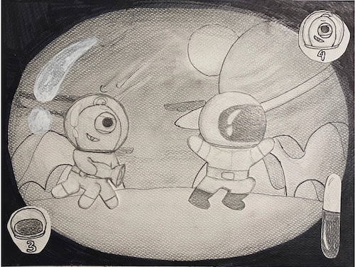
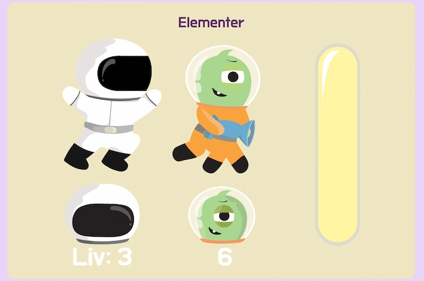
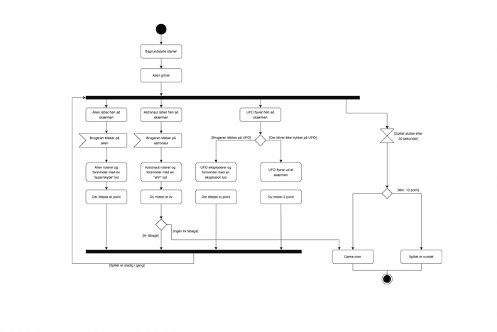
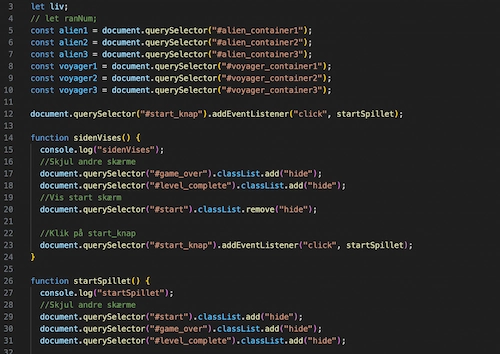

Animation
Jeg lavede et t-shirt brand ved navn Graphit, som fokuserer på grafiske t-shirts. Jeg skabte et brand, hvor jeg stræbte efter at skabe en helhed i alt fra designet af t-shirts til udtrykket på hjemmesiden.
I UX-temaet fik jeg indsigt i brugervenlighedsoptimering gennem forskning og forskellige metoder. Jeg anvendte relevante designprincipper baseret på brugertests. Den endelige prototype blev udviklet i XD ved at implementere min forskning og testresultater.
For at fuldføre opgaven brugte jeg:
Adobe XD, Adobe Photoshop, Adobe Illustrator
Spil voyager startside.
Jeg lærte at bruge Javascript til spil animation.
Vi lærte at bruge css at style elementer. Dette er elementer som de forskellige typer tekst, eller f.eks. knapper.
Process

Vi startede processen med at generere ideer. Vi brugte blandt andet krydsmetoden og kom op med 10 ideer. Efterfølgende gik vi i gang med at lave skitser og papirprototyper.
Efter idegenereringen gik jeg videre til rentegning i Illustrator af mine figurer og alle elementer til spillet og websitet.
Inden vi begyndte at kode, udarbejdede vi aktivitetsdiagrammer og state machine-diagrammer for at få en bedre forståelse af spillets begivenheder og processer.
Jeg synes, at arbejdet med JavaScript var ret udfordrende, og der var mange koncepter at forstå, hvilket gjorde det tidskrævende. Men efterhånden blev det lettere, og jeg nåede i mål. Jeg var tilfreds med det resultat, jeg opnåede.
